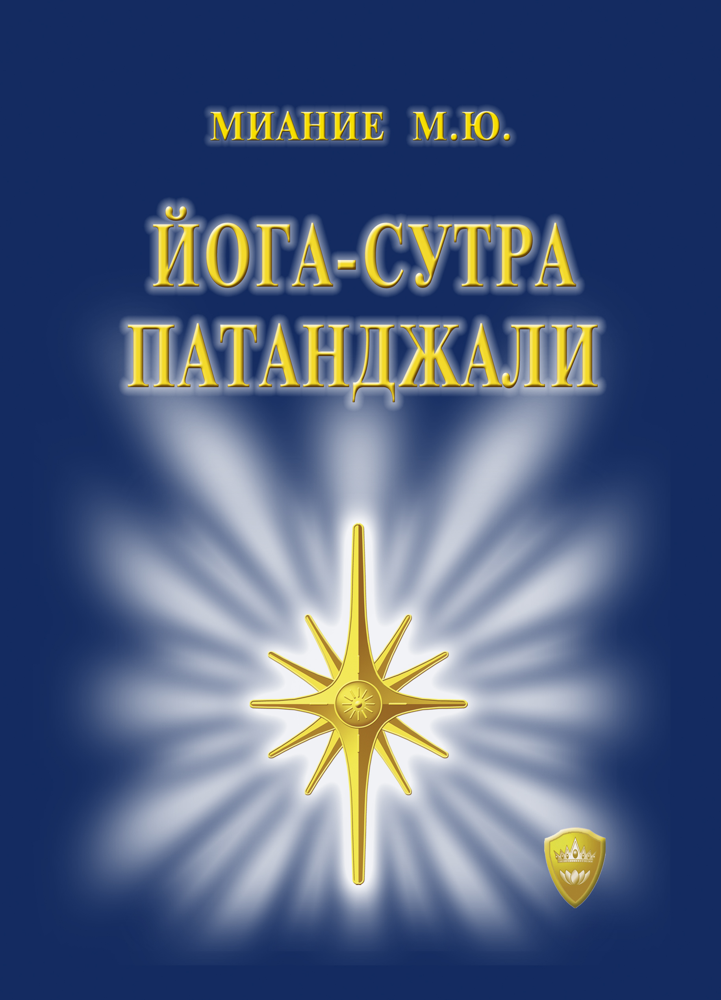

О книге
«Йога-сутра Патанджали» — это не просто свод афоризмов. Это путь раскрытия сознания. Книга объясняет энергетическую природу человека и раскрывает законы развития в духе и разуме. Каждая сутра — это ключ к внутренней силе.
Откройте тайны древнего Учения и преобразите своё сознание через осознанную практику и понимание Силы
«Йога-сутра Патанджали» — это не просто свод афоризмов. Это путь раскрытия сознания. Книга объясняет энергетическую природу человека и раскрывает законы развития в духе и разуме. Каждая сутра — это ключ к внутренней силе.
Тексты Патанджали были зашифрованы. Они открывались только тем, кто обладал ключом к знанию. Эта книга — интерпретация для тех, кто живет в нашем времени, с нашими задачами и вызовами. Это современное прочтение древней мудрости.
— Понимание устройства мира и сознания
— Техники концентрации, трансформации и пробуждения
— Настоящую внутреннюю опору и уверенность
— Поддержку на Пути развития
Оформите заказ на книгу и позвольте древней мудрости вести вас к раскрытию духа и осознанности
Купить книгу